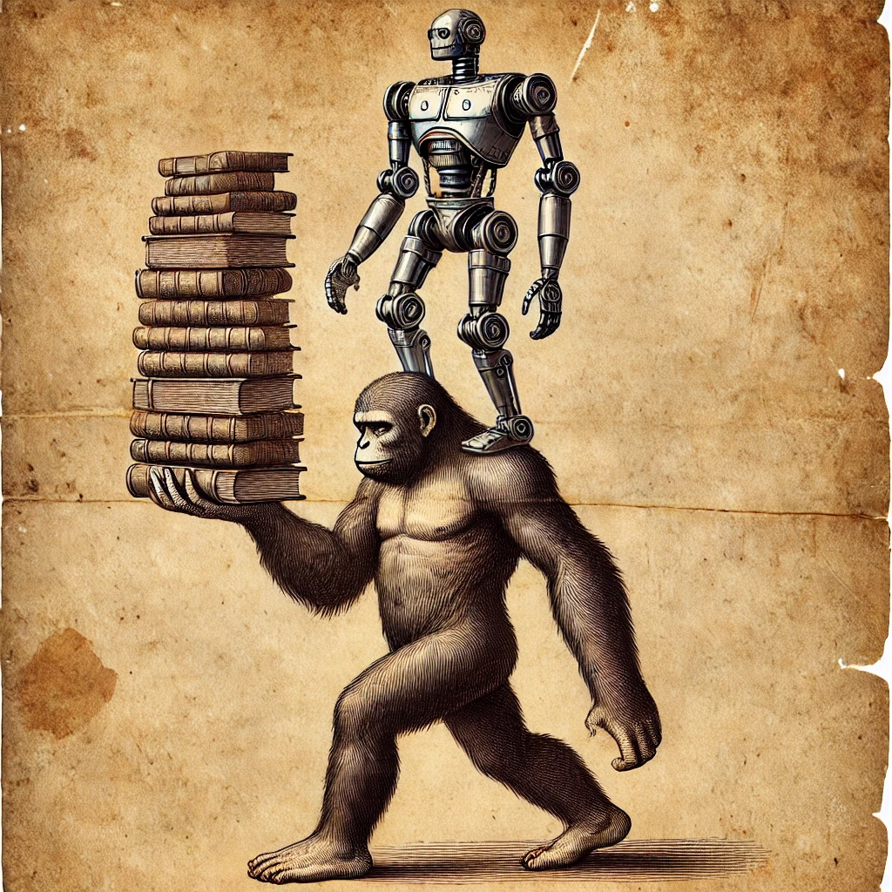
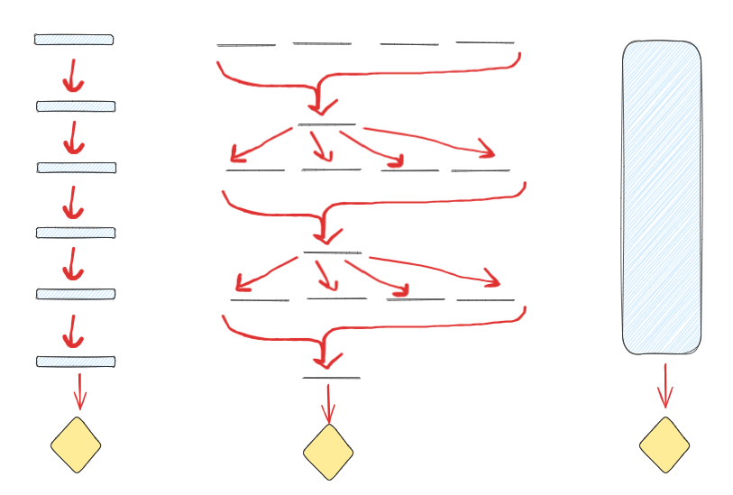
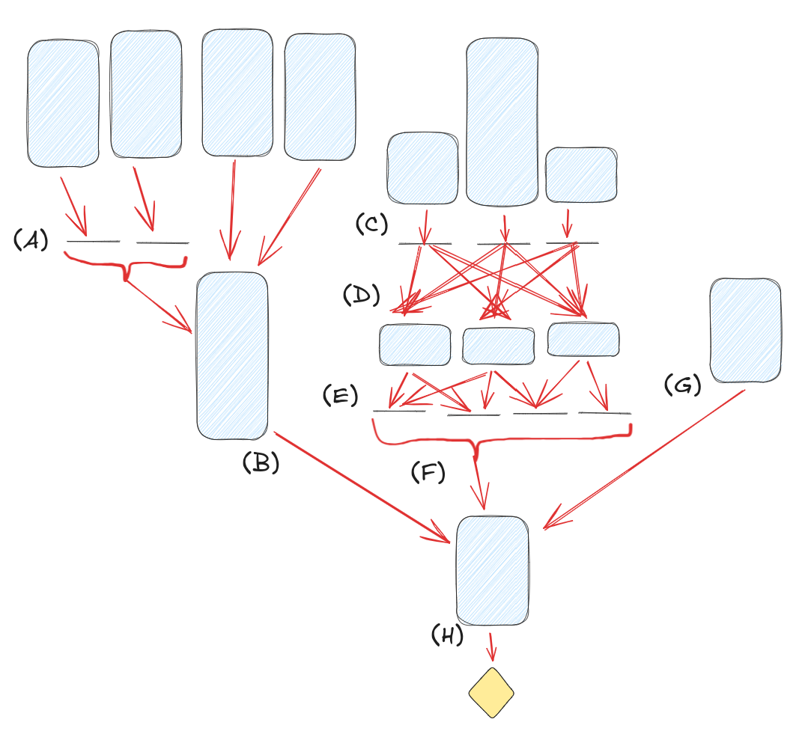

AI & wisdom 1: wisdom, amortised optimisation, and AI
Written for the AI Impacts essay competition on the automation of wisdom and philosophy

At least in name, AI is about intelligence. However, intelligence is not the only mental quality that matters. Many deep mental skills, in particular regarding good, deep, or long-term judgement, are bundled under the term "wisdom". If we automate and industrialise intelligence, we may not automate and industrialise other important mental qualities, similar to how industrialising food lead to a surplus of calories, but also harms from missing nutrients.
Wisdom
How does wisdom differ from intelligence? Here are some pairs of associations between intelligence and wisdom:
- fast v slow
- novelty vs distillation
- young v old
- fluid intelligence v crystallised intelligence
- analysis v synthesis
- legible / verifiable v illegible / hard to verify
- done alone v learned from elders/culture
- small steps well v large things right
(Some others that fit my latter points less well: complex v simple, solving v preventing, facts v meaning, question-answering v question-asking, specific v holistic)
Here are some examples that are more on the wisdom side than the intelligence side:
- Among the Fuegians, an indigenous people in South America, creating an arrow is a 14-step process with 7 different tools and 6 different materials. The steps all improve the final product. The instructions emerged over a long time scale, are passed down from generation to generation. No single person invented it, or could invent it, except by learning it from their elders. (h/t The Secrets of Our Success by Joseph Heinrich, which has a dozen examples like this)
- Research taste. Acquiring it requires significant time. Having it is critical for choosing research directions. Older researchers and PhD advisers occupy a social role not that distinct from wise gurus who live at the tops of mountains: they're hard-to-reach people, whose audience you can seek if you're part of the right group, and who will pass down cryptic advice that you would do well to heed.
- The changes in the Kennedy administration between the botched Bay of Pigs invasion and the Cuban Missile Crisis. The fallout from the Bay of Pigs failure made them more pragmatic and less ideological, emphasise intellectual diversity, improve their intelligence analysis methods, and gain experience about crisis management.
- Wise quotes (e.g. "do not ask if you can bear the truth; you already do" - source forgotten), aphorisms (e.g. "hypocrisy is the compliment vice pays to virtue"), and guiding principles (e.g. "make something customers actually want"). Such things often have a lot of cleverness to them that makes them memorable, but their main point is distilling an important principle about how to get large-scale things right. Their truth or sensibleness can be hard to verify. They are far more often passed on than invented. (Many also stand on the status of some authority figure.)
A lot of wisdom is amortised optimisation
A large amount of things that seem optimised or purpose-built in the world did not come about through internal optimisation within thinking things (e.g. a person actively thinking through alternatives to find the best one). Many came about through non-mental selection acting on a population of things (e.g. evolution, memetics). Even when thinking things directly output optimised end products (e.g. a person deciding on a research direction, or Claude 3 solving a maths problem), much of the thinking seems less like search or optimisation, and more about pattern-matching and memory.
A big part of wisdom is those mental things that are more shaped by the latter types of thing, and less by direct internal optimisation. The rest of this post is about clarifying, illustrating, and defending this point of view.
The post Deconfusing direct vs amortised optimisation (by Beren) introduces the terms direct optimisation and amortised optimisation. Direct optimisation is solving problems by doing explicit search through alternatives on-the-spot when confronted with a new problem (e.g. Monte Carlo Tree Search (MCTS) algorithms that search the tree of possible chess moves). In contrast, amortised optimisation is about taking many past examples you've seen, and distilling them into a function approximator that maps from inputs to outputs (e.g. an end-to-end transformer trained on a large dataset to output winning chess moves).
Details & maths (skippable)
Below, I'll expand on these. The maths (which is different from Beren's) can be skipped, but may help understanding if you're comfortable with it.
- Direct optimisation.
- This is when our system $f$'s output on input $x$ is $$f(x) = \underset{y \in A}{\mathrm{argmax}} \; \mathcal{R}(x, y)$$where $A$ is some action space, $y$ is an action, and $\mathcal{R}$ is some reward-like measure of how good it is expected to be if action $y$ was picked on input $x$.
- Note that there's a lot left unspecified here about how the system actually does the search; this is a very high-level description.
- Direct optimisation gets more powerful with more compute / brainpower available at the moment you're solving the problem. This is because more compute means you can search over more actions (expand $A$), or evaluate the goodness of actions better (for example, in pure MCTS you can do more roll-outs from a node to get a better estimate of $\mathcal{R}(x,y)$).
- Amortised optimisation.
- The core idea is that our system $f$ uses some approximating function parametrised by some type of past data $\phi$ to calculate the output:$$f(x) = g_{\hat{\phi}}(x)$$ where $g_{\hat{\phi}}$ is some function with parameters $\hat{\phi}$. I can think of two broad ways of implementing this other function $g$.
- One is the type of training on a dataset that you do in ML. For example, you might have a dataset of inputs and desired outputs, and you try to select parameters such that the approximating function is picked out of some big set of possible functions based on how well it does on the dataset.
- This is supervised fine-tuning: $\hat{\phi} = \underset{\phi \in \Phi}{\mathrm{argmin}} \underset{(x, y) \sim p(\mathcal{D})}{\mathbb{E}} \left[\mathcal{L}(y, g_\phi(x))\right]$, where $\Phi$ is some space of parameters, $g$ is a neural network parametrised by $\phi$, $\mathcal{D}={(x_1, y_1), (x_2, y_2), \ldots}$ is some dataset of how $x$s and $y$s should be mapped to each other, $p(\mathcal{D})$ is a probability distribution over the dataset, and $\mathcal{L}$ is some loss-like measure of how close the correct $y$ is to the value $\hat{y} = g_\phi(x)$ that $g_\phi$ predicts on $x$.
- However, amortised optimisation does not need to involve a neural network. It could simply be about storing a simple cache of past data and doing what's best given the data in that cache.
- For example, let $\phi: X \to (Y \to \mathbb{R})$ be a cache that maps each input $x \in X$ to a function from an action $y \in Y$ to the expected reward if outputting $y$ when given $x$. Then let $g_\phi(x) = \underset{y \in \mathrm{dom}(\phi(x))}{\mathrm{argmax}} \; \phi(x)(y)$; i.e. do whatever was associated with the highest expected reward historically. This is essentially just a cached version of direct optimisation, as you can see by noting that $\phi(x)(y)$ is a reward estimate just like $\mathcal{R}(x, y)$ above in the direct optimisation equation. However, the key difference is that performance relies on computation in the past, not the present. In direct optimisation, the search is done when we see the input. In amortised optimisation, we look at the results of past optimisation, as stored in $\phi$.
- One is the type of training on a dataset that you do in ML. For example, you might have a dataset of inputs and desired outputs, and you try to select parameters such that the approximating function is picked out of some big set of possible functions based on how well it does on the dataset.
- Think of amortised optimisation as using the embedded results of optimisation in the environment. For example, in an ML training run, humans may have annotated the data with the correct labels, so the data is a reflection of their optimisation. Or if using world history to predict future events, every outcome of a war embeds a lot of facts about the world and a lot of optimisation on the part of the people running it.
- The past optimisation that is relied on doesn't have to be your own - you can get it by watching others succeed and fail, and then informing your own actions based on that.
- Amortised optimisation involves a bigger up-front investment - you have to collect data, and distil it - but then using the result is faster, since there is less of a requirement for expensive optimisation for each new sample.
- Note that sometimes, techniques that are amortised optimisation on paper can create direct optimisers, especially if the space of parametrisations $\Phi$ for the approximating function $g$ is large and there is a lot of effort spent on finding the right $\phi \in \Phi$. For example, humans can do direct optimisation, but the process of evolution is more like amortised optimisation. Powerful ML systems may implement direct search internally, despite their amortisation-based training method.
- Amortised optimisation is in some sense more bounded than direct optimisation, since it doesn't involve an open-ended search over alternatives, but instead a distillation of existing data.
- The core idea is that our system $f$ uses some approximating function parametrised by some type of past data $\phi$ to calculate the output:$$f(x) = g_{\hat{\phi}}(x)$$ where $g_{\hat{\phi}}$ is some function with parameters $\hat{\phi}$. I can think of two broad ways of implementing this other function $g$.
Connecting amortised optimisation to wisdom
Let's return to our list of intelligence v wisdom properties from above, and see how well they map onto direct v amortised optimisation:
- fast v slow: direct optimisation relies on being fast at evaluating many options on-the-fly, amortised does not
- novelty vs distillation: amortised optimisation is inherently about distilling prior experience, which makes direct optimisation better for finding novel solutions
- young v old: speed is an advantage of youth and required for direct optimisation; experience / training data are an advantage of age and what's required for amortised optimisation
- fluid intelligence v crystallised intelligence: just read the first paragraph of the Wikipedia article
- analysis v synthesis: analysis often relies on direct search through & comparison of alternatives, which sounds a lot like direct optimisation; synthesis is essentially distillation
- legible / verifiable v illegible / hard to verify: direct optimisation often naturally comes with an explanation in terms of "I searched this set of options, and this one seemed best"; amortised optimisation gives you a compressed approximation of some data that might be totally opaque
- done alone v learned from elders/culture
- amortised optimisation is strongest when it can take advantage of a large pool of examples and training data, and there is no requirement that it has to be your data that you learn from
- direct optimisation involves running an internal search process
- small steps well v large things right
The last one is perhaps the least-obvious, but also most important one. I will justify this in a later part.
To return to our examples of wisdom from before:
- In The Secrets of Our Success (see reviews here or here), the case is made, again and again, that humanity's impressiveness and ability to survive is built on cultural evolution - people copying and tweaking successful behaviours over time - rather than our ability to think up things on the spot.
- If you dig into what traits it takes to do good research, the most valuable ability is research taste: the ability to choose directions wisely based on an accumulated intuition.
- Making wise decisions about policy, whether in the Cuban Missile Crisis or otherwise, often has underlying factors that look less like difficult on-the-fly calculations, and more like lots of experience and careful consideration of precedent.
- You don't search over the space of wise quotes or good heuristics in your head to get advice; instead, you remember and apply ones you've heard.
Optimised artefacts
If you look at a Haskell function that sorts lists, or the xylem inside a tree that transport water up, it feels clear that they're the results of some optimisation process. They're just too unlikely otherwise; a random walk through some relevant reference space, like the set of all strings that are syntactically-valid Lisp programs of a certain length, or the set of ways that you can arrange the molecules in a tree, would be extremely unlikely to hit something as "useful". Call such things optimised artefacts.
(These are both examples of fairly physical optimised artefacts, but things like decisions, plans, and ideas can be optimised artefacts without any physical realisation.)
What mix of amortised or direct optimisation produced an optimised artefact is a fact about its history, not its state at any particular point. Before the theory of evolution, xylem would've been thought of as a product of direct optimisation: presumably, God did some mental work to figure out which structure would make trees work to fulfil His purposes. Now that we know trees came about without any on-the-fly mental search, we'd call them products of amortised optimisation, even without any change in our understanding of what trees do. Likewise, we'd think the Lisp search algorithm more a product of amortised optimisation if it was produced by an evolutionary search algorithm, or by a transformer that had memorised it. We'd think it more a product of direct optimisation if it was dreamt up on the spot by someone who had never seen a sorting algorithm before, or by an AI with no Lisp or sorting algorithms in its training data.
Obviously, all of this is a matter of degree, and usually there is some amortised optimisation lurking somewhere. For example, the programmer who writes a sorting algorithm without ever having seen might've still learned Lisp from SICP, the concept of an algorithm from Ada Lovelace, and - going further back - their general intelligence depends on millions of years of hominid evolution. A full account of how the optimised artefact of the Lisp program came to be requires understanding all of this. But depending on what we're talking about, there's often some natural domain, such as "writing algorithms", and we can talk about degrees of amortised v direct optimisation, from "the impressive part of the feat was almost entirely making good use of lots of existing results/ideas/instincts" to "the impressive part of the feat was almost entirely a lot of explicit novel thinking". Below, I try to visualise this.
Trees of historical optimisation
Every optimised artefact has an explanation for being so optimised. For any such artefact, we can imagine a tree, with the artefact (diamond shape) at the root. Here are three prototypical "shapes" of optimisation:

- On the left, we see iterative amortised optimisation. A small amount of thought / direct optimisation is done at each step (slim blue rectangles), and the refined result is passed on to be acted on by the next bit of thought. This might be traditions slowly being refined over generations, or gradient steps in an ML algorithm.
- In the middle, we see something like evolution. No direct thought is done (the rectangles have no height), but in each generation there is some selection that selects some output (e.g. a change in the frequency of alleles) that the next generation is based on. In the end, you get an optimised fungus or whatever.
- On the right, we have direct optimisation. Because this essay is not about direct optimisation, it's left as a black box (or rather, a blue box). Some thinking entity in the world thinks, probably doing some sort of internal search or simulation of possibilities, and produces an optimised artefact at the end.
In the real world, these tend to be mixed. For example, let's take the Lisp sorting algorithm from before:

Maybe there's some long-term selection forces that determine which professors at which institutions are most prestigious (A), the results of which feed into the choices of a professor who spends a bunch of time thinking about the field (B) to decide what to pass on. Independently, a bunch of people spend varying amounts of effort creating programming languages (C), which different programmers try and spend some small amount of thought-time evaluating (D), whose judgements are then posted onto various online forums (E), which battle over prestige and users which determines which one our programmer trusts (F) regarding programming language choice. Meanwhile, their random friend gives them some advice after thinking about the problem for a while (G). Finally, the programmer thinks and writes the program (H).
(This tree doesn't necessarily have to be a tree; it could be a DAG too.)
When can you use an optimised artefact in your amortised optimisation process?
An optimised artefact can be useful for amortised optimisation under several conditions:
- Is this process caching still-relevant good direct optimisation? Like direct optimisation, some amortised optimisation is good by virtue of being aligned / sharing a goal with us. For example, the field of philosophy has spent a lot of time trying to figure out morality, and since (so far) the work was done by humans and humans generally have similar-ish values, so we don't need to start from scratch when thinking about this topic.
- The "still-relevant" part is important: the environment can change the cached information can become useless or harmful.
- Is this process caching still-relevant useful results of adversarial direct optimisation? If a warring nation or competing company spends a lot of time trying to destroy us, the optimised artefacts they produce - decisions, plans, airplanes, whatever - are often something we can build on. Hence these are useful optimised artefacts for our amortised optimisation to act over, despite being produced by processes explicitly unaligned with us.
- Would the useful thing be the one that survived? Useful products can be created by selection forces that reward the things you care about, whether or not anything in the system apart from the selection forces is aligned or shares a goal with you.
- You can buy a 300 W solar panel for $200. This is a miracle of engineering, logistics, and planning. The fundamental goals of the intelligent agents in the market mostly don't matter for the purposes of us getting the solar panel. The incentives of the firms in the market or the market as a whole don't even matter that much; we care about the solar panel, not solar stocks. Some of this is simply direct optimisation plus trade, but lots of economic activity is organised without explicit human optimisation, through a selection process that achieves efficiency mostly through amortised rather than direct optimisation.
- Grass evolved to reproduce and grow. We don't care about that. But it exists in our environment, and we can exploit its evolved properties and use it as thatching.
- In addition to failing through misaligned incentives, or by the results of the amortised optimisation reflecting out-of-data data, this can fail through Goodharting.
Wise artefacts & wise people
We can attempt some loose definitions:
An optimised artefact reflects amortised optimisation to the extent that the most important parts of its construction were achieved by reusing existing optimised artefacts.
(I don't use the word "wisdom" above because it seems silly to call a blade of grass wise.)
Similarly, for direct optimisation:
An optimised artefact reflects direct optimisation to the extent that the most important parts of its construction were achieved by a thinking entity doing a mental search over possibilities.
Finally, let's make a claim about wisdom:
A "wise" person is someone who is good at using existing optimised artefacts when creating new optimised artefacts.
Optimised artefacts created through direct optimisation aren't automatically "wise". But if a person is able to look at the optimised artefacts around them, and cleverly and correctly use them to create optimised artefacts of their own, this sounds a lot like wisdom, for the reasons we've discussed above. This covers everything from wise gurus correctly applying the lessons long experience has taught them, to people using culturally-evolved tools and traditions to further their goals.
(Note that in the same way that "intelligent" does not imply morally good, "wise" does not imply morally good either. We should take care to distinguish between terms about mental capabilities, and terms about alignment of goals.)
What's missing from this picture of wisdom
By focusing on amortised optimisation, we're missing out on some things often associated with wisdom:
- The first is wisdom as the ability to live a fulfilling life. This is beyond the scope of this post; please consult your nearest wise mountain guru for advice.
- The second is wisdom in the sense of choosing the right questions to ask, or having the right frame or ontology for a problem. We'll see how amortised optimisation relates to some aspects of this in the third post in this series.
- The third is ethical judgements. This can be decomposed into the part where you're trying to make the right ethical judgement in the first place, which is about value alignment rather than mental capabilities, and therefore not part of the capability-focused view of wisdom I'm focusing on here. The second is making the right ethical judgements given a desire to do so. I will briefly discuss this in the next part.
- The final is wisdom as rationality, epistemics, or calibration. This is what the final section below is about.
How does epistemics relate to amortised optimisation?
In some sense, successful amortised optimisation implies the result is calibrated. Also, a lot of the calibration of both superforecasters and recent LLM forecasting system seems to be down to a good ability to judge base rates, which is an amortised optimisation problem. However, just because amortised optimisation is involved does not mean a decision is wise.
However, it does seem like something can meet the definition of being wise used above (being good at using existing optimised artefacts) without good epistemics - at least on the surface. In his review of The Secrets of Our Success, Scott Alexander writes:
A reasonable person would have asked why everyone was wasting so much time preparing manioc [also known as cassava, a South American potato-like plant that, unless very specifically prepared, is toxic enough to have long-term health effects but not toxic enough to do short-term harm]. When told “Because that’s how we’ve always done it”, they would have been unsatisfied with that answer. They would have done some experiments, and found hat a simpler process of boiling it worked just as well. They would have saved lots of time, maybe converted all their friends to the new and easier method. Twenty years later, they would have gotten sick and died, in a way so causally distant from their decision to change manioc processing methods that nobody would ever have been able to link the two together.
"Because that's how we've always done it" is not particularly compelling epistemics. Note that that isn't just Scott Alexander strawmanning the justifications: in another of Heinrich's examples in The Secrets of Our Success, it's specifically noted that when the people involved were asked for an explanation for a tradition (unrelated to manioc processing but with the story having the same moral), they invented nonsensical post-hoc rationalisations.
"So", you might say, "clearly this isn't wise; though I can admit the manioc processing practice is 'wise' in the whole amortised optimisation sense you've spent 4000 words describing, obviously 'manioc is bad' is not a wise belief since there's no good epistemic grounds for holding it."
I would push back against this. In particular: imagine that everyone around you thinks that following traditions like manioc processing is important. That this alone is not a good rationale is (hopefully) thoroughly drilled into everyone today. But also note: you have lots of examples of everyone being wrong and one person being right - at least, if your science teachers were any good - but this actually is a rare thing to happen, and you have those examples because you live in a large world with a well-documented history. Now also imagine that (and unlike the modern world), a lot of the most successful people around you are the ones that follow traditions the hardest. Imagine there are a bunch of cases you can think of where following traditions turned out to be really smart. Imagine you're not aware of cases where someone fought against something like the perceived inefficiency of manioc processing and won. Induction and proof-by-example are some of the most robust epistemic tools. Both of those would point towards manioc processing being good. "But if you don't understand that you're relying on induction and proof-by-example, or what justifies those - " ... look, is that really the bar? Do you have to understand the philosophy behind the epistemic principles you use in order to count as wise? That's a very high bar.
Of course, the types of examples The Secrets of Our Success is full of are somewhat weird edge cases, where wisdom and our normal standards for epistemic clarity are weirdly at odds. Normally, to make good use of amortised optimisation you need to understand the histories and implicit optimisation that you're applying well, and (especially in fast-changing worlds) make good judgements about how relevant they are. That is very loaded on good epistemics.
But part of the tension remains. In popular imagination, the wise sage is a different and much more ineffable sort of intellectual than the physics grad student who cheerfully bashes out formal proofs on a whiteboard. The above discussion on amortised versus direct optimisation justifies why. Artefacts of direct optimisation come with receipts. These might not be any better than "we searched the set of all possible $X$, and the one that did best by criterion $C$ was $X_{14}$". That may be unsatisfying - "but what's the intuition?" asks the physics grad student - but it's not a fundamentally confusing explanation.
Meanwhile, artefacts of amortised optimisation may come with clear receipts: "we did a comprehensive study of all previous cases when $Y$ happened (see Appendices B3 to B7, with further methodology notes in C5), and found that ...". But sometimes, the receipts that amortised optimisation returns are that whenever you deviated from it, your crops failed and your codebases became unmaintainable and your trading ships invariably got eaten by krakens, and the closest to an explanation you have is a crazy old guru cackling about how naive the youths are today. Sometimes you try to build explainable AIs with all the nice algorithms they taught you in school and five more that some maths wiz dreamt up brilliant reasons for, and none of it works, and then you take your hundred-billion-parameter neural network and bonk it on the head when it predicts something wrong and eventually it beats PhDs at tricky reasoning questions in their field.
But in a way, "this is the thing that works, and we know this because things were tried until it worked" is one of the simplest types of reason you can have for something. And whatever your fancy justifications and clever thinking for something, "will this actually endure in the real world?" is the ultimate test, and "has this sort of thing previously endured in the real world?", if available, is often one of the best facts to use in answering that question.
The fact that we can have correct justifications for things without relying on the histories, distillation, and trial-and-error that feeds amortised optimisation is because of a combination of humans being smart, and humans having figured out things like science and maths and epistemics that often give shortcuts. That fact that we must rely on such things is because we live in a fast-growing and fast-changing world, where amortised optimisation (or at least, non-AI amortised optimisation) can't give all the answers fast enough. The dynamics of how the relative importance of direct and amortised optimisation varies are the subjects of the next post.